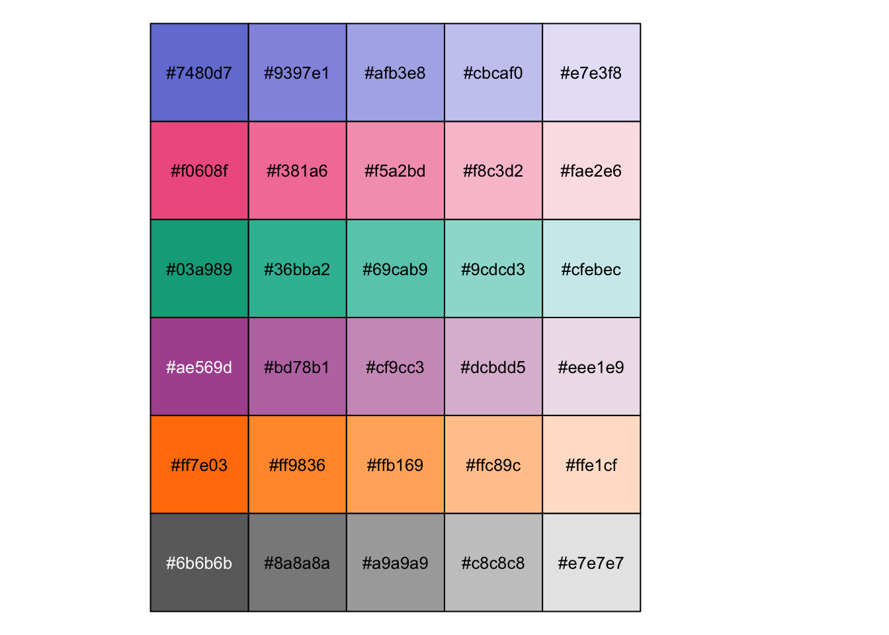
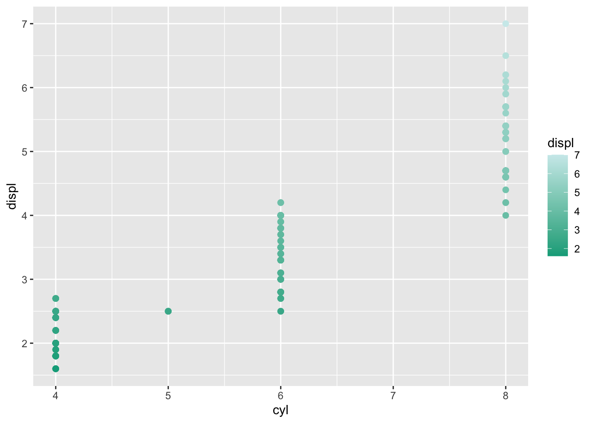
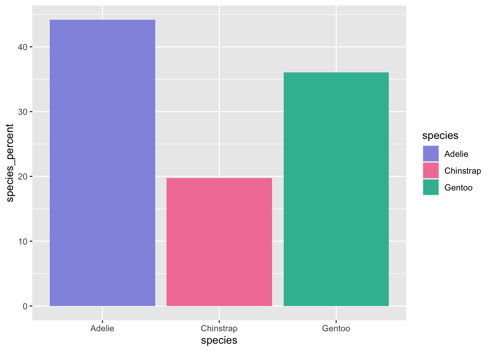
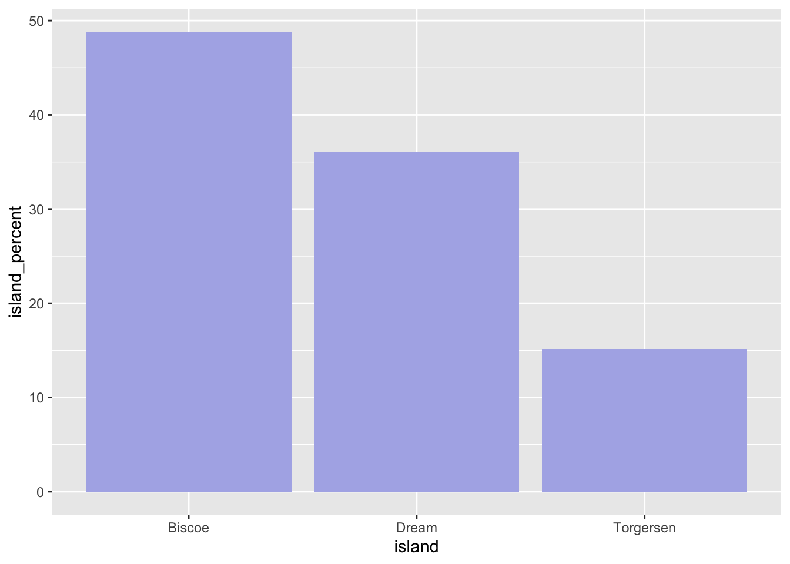
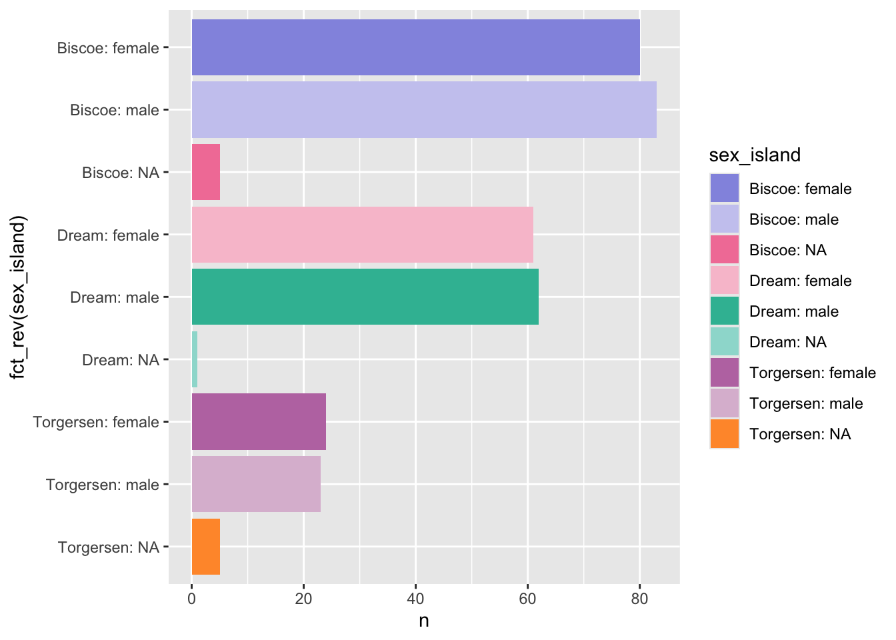
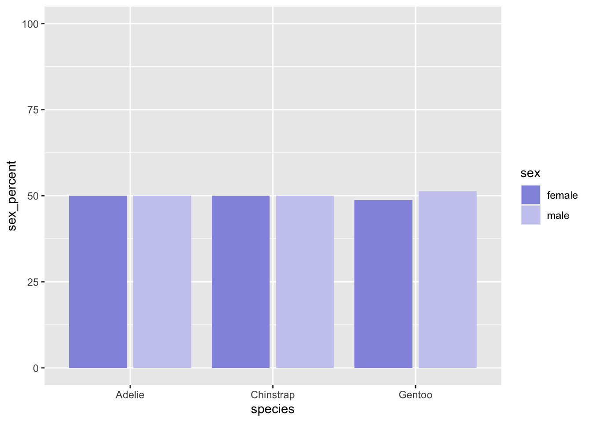

library(tidyverse)
library(ggpubr)6 Colours
6.1 Penguin test data
penguin <- palmerpenguins::penguins
library(gtsummary)
penguin %>% tbl_summary(label = list(
species ~ "Penguin species",
island ~ "Island in Palmer Archipelago",
bill_length_mm ~ "Bill length (millimeters)",
bill_depth_mm ~ "Bill depth (millimeters)",
flipper_length_mm ~ "Flipper length (millimeters)",
body_mass_g ~ "Body mass (grams)",
sex ~ "Penguin sex",
year ~ "Study year"),
missing_text = "Missing",
statistic = list(all_continuous() ~ "{mean}"))| Characteristic | N = 3441 |
|---|---|
| Penguin species | |
| Adelie | 152 (44%) |
| Chinstrap | 68 (20%) |
| Gentoo | 124 (36%) |
| Island in Palmer Archipelago | |
| Biscoe | 168 (49%) |
| Dream | 124 (36%) |
| Torgersen | 52 (15%) |
| Bill length (millimeters) | 43.9 |
| Missing | 2 |
| Bill depth (millimeters) | 17.15 |
| Missing | 2 |
| Flipper length (millimeters) | 201 |
| Missing | 2 |
| Body mass (grams) | 4,202 |
| Missing | 2 |
| Penguin sex | |
| female | 165 (50%) |
| male | 168 (50%) |
| Missing | 11 |
| Study year | |
| 2007 | 110 (32%) |
| 2008 | 114 (33%) |
| 2009 | 120 (35%) |
| 1 n (%); Mean | |
6.2 Palettes
jcolours <- list(
blue = "#9397e1",
pink = "#f381a6",
mint = "#36bba2",
purple = "#bd78b1",
orange = "#ff9836",
grey = "#8a8a8a",
blues = c("#7480d7", "#9397e1", "#afb3e8", "#cbcaf0", "#e7e3f8"),
pinks = c("#f0608f", "#f381a6", "#f5a2bd", "#f8c3d2", "#fae2e6"),
mints = c("#03a989", "#36bba2", "#69cab9", "#9cdcd3", "#cfebec"),
purples = c("#ae569d", "#bd78b1", "#cf9cc3", "#dcbdd5", "#eee1e9"),
oranges = c("#ff7e03", "#ff9836", "#ffb169", "#ffc89c", "#ffe1cf"),
greys = c("#6b6b6b", "#8a8a8a", "#a9a9a9", "#c8c8c8", "#e7e7e7"),
colours10 = c("#9397e1", "#f381a6", "#36bba2", "#bd78b1", "#ff9836", "#cbcaf0", "#f8c3d2", "#9cdcd3", "#dcbdd5", "#ffc89c"),
colours_soft10 = c( "#cbcaf0", "#f8c3d2", "#9cdcd3", "#dcbdd5", "#ffc89c", "#9397e1", "#f381a6", "#36bba2", "#bd78b1", "#ff9836"),
colours_pairs = c("#9397e1", "#cbcaf0", "#f381a6", "#f8c3d2", "#36bba2", "#9cdcd3", "#bd78b1", "#dcbdd5", "#ff9836", "#ffc89c", "#8a8a8a", "#c8c8c8"),
colours_diverge_blue = c("#7480d7", "#e7e3f8"),
colours_diverge_pink = c("#f0608f", "#fae2e6"),
colours_diverge_mint = c("#03a989", "#cfebec"),
colours_diverge_purple = c("#ae569d", "#eee1e9"),
colours_diverge_orange = c("#ff7e03", "#ffe1cf"),
colours_diverge_grey = c("#6b6b6b", "#e7e7e7"),
colours_diverge_mid = c("#7480d7", "white", "#f0608f"),
blue1 = "#7480d7", blue2 = "#9397e1", blue3 = "#afb3e8", blue4 = "#cbcaf0", blue5 = "#e7e3f8",
pink1 = "#f0608f", pink2 = "#f381a6", pink3 = "#f5a2bd", pink4 = "#f8c3d2", pink5 = "#fae2e6",
mint1 = "#03a989", mint2 = "#36bba2", mint3 = "#69cab9", mint4 = "#9cdcd3", mint5 = "#cfebec",
purple1 = "#ae569d", purple2 = "#bd78b1", purple3 = "#cf9cc3", purple4 = "#dcbdd5", purple5 = "#eee1e9",
orange1 = "#ff7e03", orange2 = "#ff9836", orange3 = "#ffb169", orange4 = "#ffc89c", orange5 = "#ffe1cf",
grey1 = "#6b6b6b", grey2 = "#8a8a8a", grey3 = "#a9a9a9", grey4 = "#c8c8c8", grey5 = "#e7e7e7",
colours_df =
data.frame(
blue = c("#7480d7", "#9397e1", "#afb3e8", "#cbcaf0", "#e7e3f8"),
pink = c("#f0608f", "#f381a6", "#f5a2bd", "#f8c3d2", "#fae2e6"),
mint = c("#03a989", "#36bba2", "#69cab9", "#9cdcd3", "#cfebec"),
purple = c("#ae569d", "#bd78b1", "#cf9cc3", "#dcbdd5", "#eee1e9"),
orange = c("#ff7e03", "#ff9836", "#ffb169", "#ffc89c", "#ffe1cf"),
grey = c("#6b6b6b", "#8a8a8a", "#a9a9a9", "#c8c8c8", "#e7e7e7"),
stringsAsFactors = FALSE)
)
jcolours$blue5[1] "#e7e3f8"Review palette….
jcolours$colours_df %>% unlist %>% scales::show_col(cex_label = 0.8, ncol = 5)
6.2.1 Alternate colours
# Alt 1 — hue shifted +18° (blue→violet, pink→coral, mint→teal, purple→pink, orange→gold)
nc_alt1 <- data.frame(
blue = c("#7C70D4", "#9089DC", "#A6A2E5", "#C2BCED", "#E5E9EF"),
pink = c("#F25C64", "#F47D84", "#F79EA4", "#FABFC4", "#FCDEE2"),
teal = c("#009EAB", "#33B1BC", "#66C5CD", "#99D8DE", "#CCECEF"),
green = c("#00AB52", "#33BD77", "#66CC9D", "#99DEC2", "#CCEDE8"),
purple = c("#A353B0", "#B575BF", "#C999D1", "#DBBADE", "#EDDEED"),
orange = c("#FF3500", "#FF5D33", "#FF8566", "#FFAD99", "#FFD5CC"),
orange = c("#FFCE00", "#FFD633", "#FFDF66", "#FFE999", "#FFF4CC"),
stringsAsFactors = FALSE)6.3 Continous data
Either a gradient or two diverging colours.
My preference for most charts is one colour from opaque to low opacity. As shown below, when you run from one colour to another the results are often hard to follow. The exception perhaps are maps, where a third middle colour, that can be white, works quite well. This does not work for something like a dot plot.
base <- ggplot(mpg, aes(cyl, displ, colour = displ)) +
geom_point(size = 2)
base + scale_color_gradient(low = jcolours$colours_diverge_mint[1], high = jcolours$colours_diverge_mint[2])
6.4 Categorical data.
6.4.1 Different categorical colours.
species <- penguin %>% group_by(species) %>% summarise(n = n()) %>%
mutate(species_percent = 100 * (n/ sum(n)))
bar1 <- species %>% ggplot(aes(x = species, y = species_percent, fill = species)) +
geom_col() +
scale_fill_manual(values = jcolours$colours10)
bar1
6.4.2 One colour
island <- penguin %>% group_by(island) %>% summarise(n = n()) %>%
mutate(island_percent = 100 * (n/ sum(n)))
bar2 <- island %>% ggplot(aes(x = island, y = island_percent)) +
geom_col(fill = jcolours$blue3)
bar2
6.4.3 Lots of colours
penguin <- penguin %>% mutate(
sex_island = paste0(island, ": ", sex)
)
bar5 <- penguin %>% count(sex_island) %>%
ggplot(aes(x = fct_rev(sex_island), y = n, fill = sex_island)) +
geom_col() +
coord_flip() +
scale_fill_manual(values = jcolours$colours_pairs)
bar5
6.4.4 Pairs
island_species <- penguin %>% group_by(species, sex) %>% summarise(n = n()) %>% filter(!is.na(sex)) %>%
group_by(species) %>%
mutate(sex_percent = 100 * (n/ sum(n)))`summarise()` has grouped output by 'species'. You can override using the
`.groups` argument.bar4 <- island_species %>% ggplot(aes(x = species, y = sex_percent, fill = sex)) +
geom_col(position ="dodge2") +
scale_fill_manual(values = jcolours$colours_pairs) +
ylim(c(0,100))
bar4